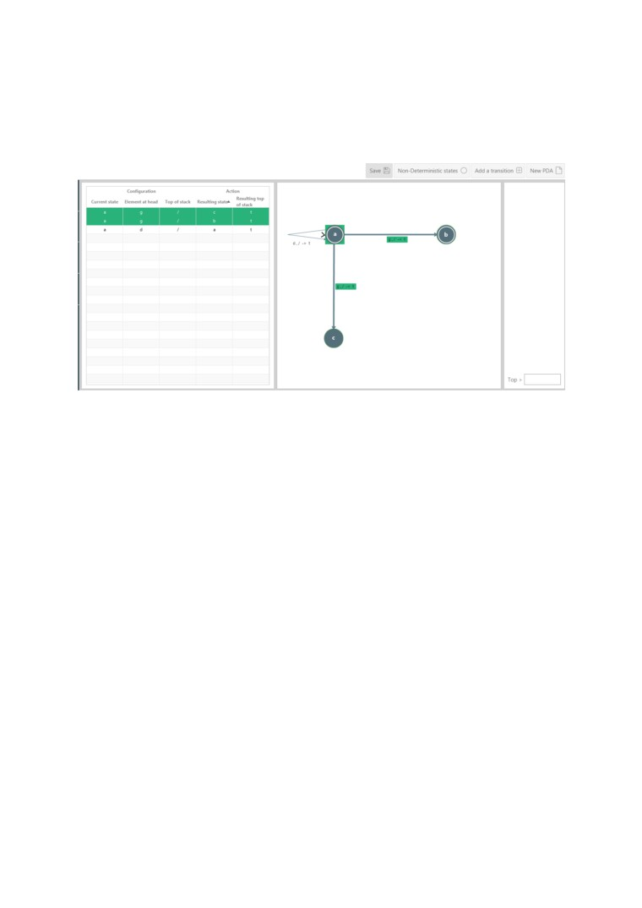

Non-deterministic mode
You can view all non-deterministic transitions by accessing non-deterministic mode by
clicking on it in the toolbar while the PDA is loaded.
The highlighted transitions are the non-deterministic transitions.